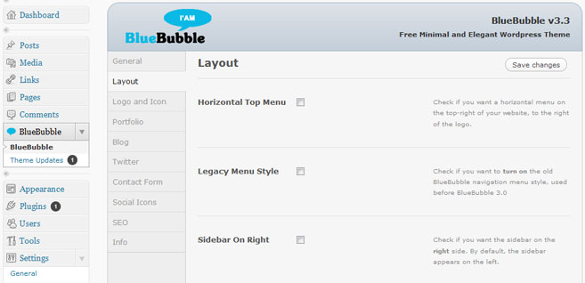

Creado: 11 enero, 2011
Por: imaginalgo
Apoyo: Apoyo BlueBubble
Gracias por tu interés en BlueBubble para Wordpress. Este theme ha sido numerado 3.0 po su compatibilidad con Wordpress 3.0. Aprovecha varias funciones de Wordpress 3.0 como: MultiSitios, Encabezados Personalizados, y el nuevo sistema de navegación. Todo esto mientras conservando el estilo original de las versions anteriores. Fácil instalar y fácil usar – ojalá que te guste.
Lo siguiente es una lista de cambios, reparaciones y novedades en versión. 3.4:
Al partir de versión 3.3, el theme BlueBubble automáticamente te notificará cuando haya una nueva versión del theme. Simplemente vaya al Panel de Opciones y elige la opción Actualizaciones del menú.
Gracias por tu interés en BlueBubble para Wordpress. Este theme ha sido numerado 3.0 po su compatibilidad con Wordpress 3.0. Aprovecha varias funciones de Wordpress 3.0 como: MultiSitios, Encabezados Personalizados, y el nuevo sistema de navegación. Esta funcionalidad ya está incluida y no es necesario cambiar nada en el documento functions.php.
Además, hay varias cosas nuevas en esta versión, como: un Panel de Control con muchas opciones, 7 combinaciones de colores, un Lightbox para los artículos en el portafolio, la capacidad de mandar a Twitter cualquiera publicación y una sección con datos del autor con sus publicaciones.
Todo esto mientras conservando el estilo original de las versions anteriores. Fácil instalar y fácil usar – ojalá que te guste.
Sinceramente,
Thomas Veit y Mike Walsh
Primero, asegúrate que ya tienes instalado Wordpress 3.0 or más recién. Después de instalarlo, cargar o copiar la carpeta bluebubble a wp-contents/themes. Una vez hecho…
El Panel de Opciones ha sido cambiado y rediseñado para versión 3.3. Las mismas opciones aún están presentes, y también encontrarás varias nuevas. Aquí es lo que verás:
Unas categorías especiales:
Esta sección es bastante simple. ¿Recuerdes cuando creaste la página Portada y las categorías en sección 2.5? Si hiciste esto, se van a aparecer en los menús aquí. Aquí se conectan las páginas hechas en secciones 2.2 y 2.3 con las categorías en sección 2.5.
The check box is quite simple – if you don't want users to be able to leave comments on your portfolio pages, check the box. (Note: Even with the box checked, people can still post to your Blog section)
Si no quieres que las visitantes dejen comentarios en las páginas del portafolio, marcar la opción que se encuentre aquí. (Nota: Esta opción no afecta los comentarios en la sección del Blog)
Se puede indicar también cuantos artículos necesitan por página. Si no escribes nada, cada página de la sección del portafolio mostrará 6 artículos y automáticamente creará más páginas si existen más que 6 artículos.
El formulario de contacto BlueBubble viene listo y tiene validación con JQuery Javascript y una opción para el usuario mandarse una copia del correo. Simplemente ingresa la dirección de correo electrónico donde quieres recibir los correos. Si no ingresas nada los correos enviados desde el formulario llegarán al correo del administrador del sitio.
Debajo de la sección del Formulario de Contacto hay una serie de espacios relacionados con Media Social. Si quieres ingresar un enlace a un sitio social, como Twitter, sigue estas instrucciones:
Hay apoyo para los siguientes sitios: Facebook, Twitter, LinkedIn, Delicious, Digg, DeviantArt, MySpace, Evernote, Flickr, Netvibes, Orkut, Reddit, ShareThis, StumbleUpon, Technorati, y Tumblr.
Además de las opciones ya mencionadas, hay otras opciones que ayudan a mejorar tu experiencia con el theme BlueBubble.
Logo Personalizado: Para reemplazar el log de BlueBubble con tu propio, carga un logo desde la opción Media, copia la dirección URL y pegarla en este campo.
Favicon Personalizado: Mismo proceso como el anterior. Nota – el Favicon debe ser en formato .ico, aunque algunos navegadores también utilizan .png.
Favicon Personalizado: Mismo proceso como el anterior. Nota – el Favicon debe ser en formato .ico, aunque algunos navegadores también utilizan .png.
Campos del Usuario Personalizados: BlueBubble ha agregado unos campos nuevos a los que vienen por omisión en Wordpress.
Códigos Cortos: Hay 2 tipos de códigos cortos en BlueBubble 3.2 – cuadros de texto y botones. Códigos cortos son códigos de texto especiales que se puede usar para agregar nueva funcionalidad cuando publicando. Desde versión 3.4, los códigos cortos se han agregado al Panel de Escribir en Wordpress. Ahora solo hay que apretar el botón con el punto azul o verde por ejemplo para insertar el código del botón del mismo color.
Perfil del Autor: Desde la sección del Blog uno se puede apretar el nombre del autor par aver una sección aparte que contiene la información del perfil del autor y una lista de su publicaciones.
Foto del Autor Personalizada: Es possible usar un Plugin de Wordpress para permitir que usuarios cargan sus propias fotos de perfil, pero hay otra manera también. Carga una foto a la carpeta wp-content/themes/BlueBubble/images/authors/ con el mismo nombre como tu número de usuario, y en formato .jpg Por ejemplo, el administrador, quien tiene un número de usuario 1 cargaría el imagen 1.jpg. EL tamaño ideal del imagen es 100x100.
Si ya seguiste las instrucciones anteriores, es súper fácil agregar un artículo al portafolio. Mire:
Si tienes dificultades o problemas con el portafolio o blog, favor de leer el document de ayuda correspondiente que vino con el theme.
Usuarios más avanzados en el conocimiento de Javascript y/o PHP tal vez quieren cambiar ciertos aspectos del theme BlueBubble. Notan lo siguiente:
/* Remove Wordpress Ver. Number from HTML - For Security Reasons */
function wpbeginner_remove_version() {
return '';
}
add_filter('the_generator', 'wpbeginner_remove_version');
//Check to make sure that the name field is not empty
if(trim($_POST['contactName']) === '') {
$nameError = 'You forgot to enter your name.';
$hasError = true;
} else {
$name = trim($_POST['contactName']);
}
//Check to make sure sure that a valid email address is submitted
if(trim($_POST['email']) === '') {
$emailError = 'You forgot to enter your email address.';
$hasError = true;
} else if (!eregi("^[A-Z0-9._%-]+@[A-Z0-9._%-]+\.[A-Z]{2,4}$", trim($_POST['email']))) {
$emailError = 'You entered an invalid email address.';
$hasError = true;
} else {
$email = trim($_POST['email']);
}
//Check to make sure comments were entered
if(trim($_POST['comments']) === '') {
$commentError = 'You forgot to enter your message.';
$hasError = true;
} else {
if(function_exists('stripslashes')) {
$comments = stripslashes(trim($_POST['comments']));
} else {
$comments = trim($_POST['comments']);
}
}
Ahora vaya a la carpeta scripts y abre el documento contact-form.js, buscando y cambiando estos campos en amarillo:
$('.requiredField').each(function() {
if(jQuery.trim($(this).val()) == '') {
var labelText = $(this).prev('label').text();
$(this).parent().append('You forgot to enter your '+labelText+'.');
hasError = true;
} else if($(this).hasClass('email')) {
var emailReg = /^([\w-\.]+@([\w-]+\.)+[\w-]{2,4})?$/;
if(!emailReg.test(jQuery.trim($(this).val()))) {
var labelText = $(this).prev('label').text();
$(this).parent().append('You entered an invalid '+labelText+'.');
$(this).addClass('inputError');
hasError = true;
}
}
});
Cuando el usuario manda un correo usando el formulario de contacto correctamente, se ve un mensaje de felicitaciones. Este mensaje es predeterminado. (y en inglés). Para cambiar esto, abre el mismo documento contact-form.js y esta vez busca estas lineas al fin del documento: (de nuevo, solo cambiando las líneas en amarillo)
var formInput = $(this).serialize();
$.post($(this).attr('action'),formInput, function(data){
$('form#contactForm').slideUp("fast", function() {
$(this).before('Thanks! Your email was successfully sent. I will respond to you as soon as possible.');
});
});
}
return false;
});
});
Está sección tiene algunas de las preguntas más frecuentes que recibo. Por favor lea esta sección antes de preguntar algo ya contestado aquí!
Fue muy entretenido trabajar con este theme y agregar nuevas funciones a un theme ya conocido como simplemente maravilloso. Pero no pudiera hacerlo con my propio fuerza y conocimiento. Por eso, quiero agradecer las siguientes Fuentes de ayuda e inspiración:
De nuevo muchas gracias por descargar y usar este theme. Debes sentirte libre hacer cualquier consulta en el Foro de apoyo BlueBubble.
imaginalgo